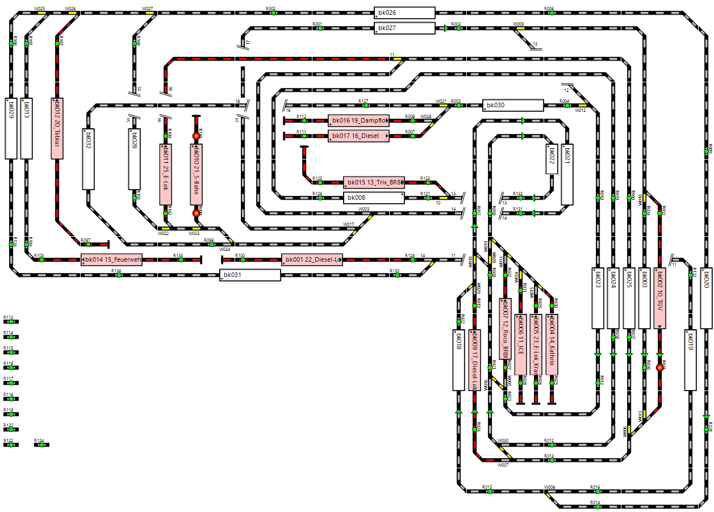

Die Steuerung meiner z21 Arduino Nachbau Eisenbahn Zentrale erfolgt mit Rocrail.
Link zur freien Digitale Modellbahnsteuerung
Rocrail
(externer Link)
- Gleisplan mit aktuellen Stand der Weichen, durch s88-N Rückmeldungen
- Schalten der Weichen durch Mausklick auf den Gleisplan, mit Anzeige der realen Weichenstellung, auch bei händischer Umschaltung
- manuelles Steuern der Weichen und Fahren der Lokomotiven
- Anzeige der Gleis Blöcke mit den Rückmeldern "enter" und "in"
- Steuerung durch Rocrail und / oder von mehreren Roco Lokmäusen
- automatischer Zugbetrieb, zufälliges Fahren von mehreren Zügen gleichzeitig, mit Schalten der Weichen
- automatischer Zugbetrieb, Fahren von Zügen nach Fahrplan
- Lesen und Schreiben von Lokdecoder CV
diese Rocrail Dokumentation / Konfiguration habe ursprünglich nur für mich erstellt und nachträglich für interessierte als Info bereitgestellt.
Rocrail Konfiguration (.doc)
(aktualisiert 06.2024)
ein Nachschlagewerk für ...
- Aufbau und Hürden des Rocrail Automatik Betriebs
- Rocrail Rückmelder Infos
- Definition eines Rückmelder
- Konfiguration einer Weiche mit Rückmeldung
- Konfiguration der Blöcke
- Definition von Aktionen
- Konfiguration der Fahrpläne
Mein Gleisplan:
